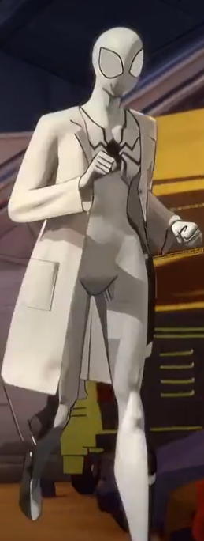
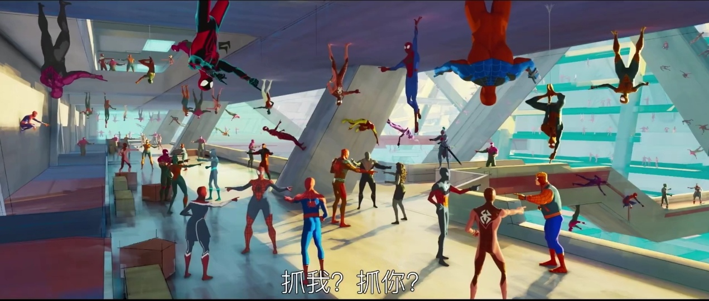
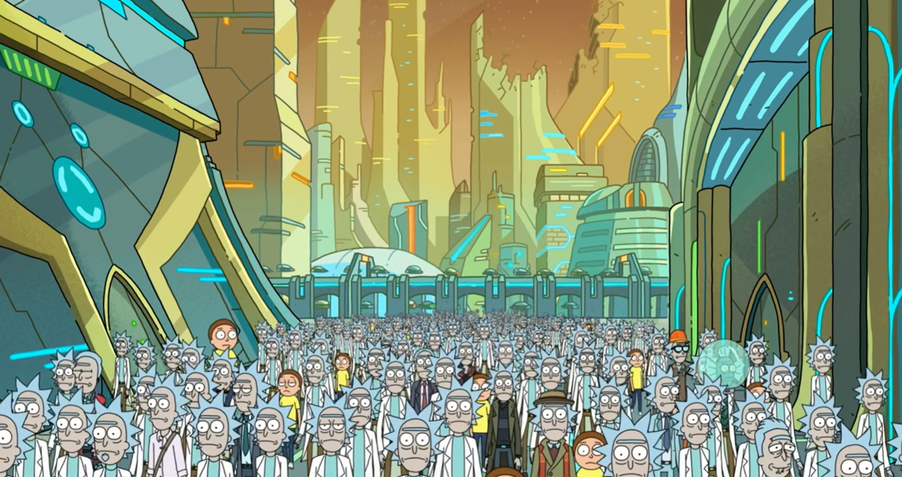
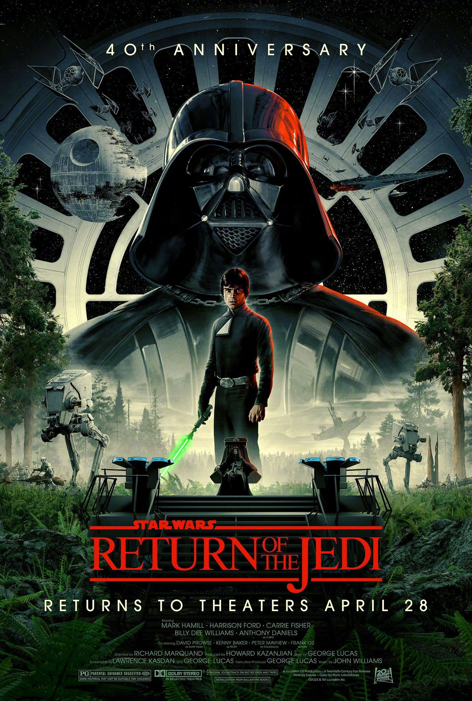

Spider-Man: Across the Spider-Verse 观后
最近二刷完《蜘蛛侠：纵横宇宙》，顺手写点有趣的东西吧。
先放张剧照镇下帖。

以下也有许多是口嗨，不喜勿喷。
Spotter-man
这名字我瞎起的。。
主要是看到这个东西：

我不知道官方有没有关于这个的介绍，反正挺有意思的，看着像 Spot 和 Spider-man 的结合体，就瞎起了个名字。
有点像：
瑞克与莫蒂
第一遍看的时候就觉得这两东西挺像的了：

和

（不过只是有些设定挺像的，其他的。。。毕竟后者那一集是额。。dddd）
星球大战

《蜘蛛侠：平行宇宙》这两部情节设置个人感觉和《星球大战》（4-6）很有相似之处。（星战是三部曲鼻祖，不像就怪了。。）我随便说说：
两系列电影的第一部中，主角（Miles和Luke）在开始都是处于懵懂状态，一者是有点叛逆的高材生，一者是向往自由的农场少年（随便概括一下，可能不大准确）。
电影不久出现第一处转折，一个是 Miles 被 42 号蜘蛛咬了一口，另一个是 Luke 遇上 R2-D2 和 C-3PO，这个转折将主角引向一个重要人物，Miles 遇上的是 Peter，Luke 则遇上了 Obi-Wan。
接下来出现第二处转折，Miles 目睹了 Peter 之死，Luke 则是被帝国抄家，Owen 夫妇双亡。
第二个转折之后主角遇上主角团，带着主角团打团战（May 被抄家和 Luke 拯救 Leia），打团战的时候出现第三个转折：Miles 的叔叔 Aaron 中弹挂了、Luke 的导师 Obi-Wan 成为英灵。
两部电影都先后在这两次转折中出现与主角自己有深层联系的反派：Miles 的叔叔 Aaron 是徘徊者，Luke 的爹爹 Anakin 是 Vader。
第三个转折之后来一段主角的成长，最后对局 Boss 然后摧毁电影重要地点（对撞机和死星）（不过 Luke 主要是炸死星而不是和 Vader 的对局），对局 Boss 的时候都来个场外精神援助（Miles 他爹和 Obi-Wan 的英灵）。
然后第一部引来一个比较美满的结局。
第一部可以说相似性相当高，第二部也有很多相似之处。
比如主角在对局反派（Miguel 在这部里姑且算是个广义上的反派吧）时了解到自己的身世：Miles 是个错误的产物，Luke 是 Vader 的亲儿子。同时还发现 Gwen 和 Peter 以及 Obi-Wan 和 Yoda 早就知道真相。
再比如两部作品的结尾，主角团都被打散，一个是 Miles 落入 Miles 之手，一个是 Han 被 Boba 拐走。第二部的故事都在极紧张之后的短暂缓和中落下帷幕，一者是大大的 TO BE CONTINUE，另一者是千年隼的离去，给人留下悬念、不安、期待和微小的希望。
两系列电影的铺垫与伏笔也都做的超级好。
为什么 Miles 希望加入组织时 Gwen 如此紧张？为什么 Owen 始终不让 Luke 与 Obi-Wan 接触？
为什么 Miles 第一次与 Peter 产生感应时他的颜色从紫绿变成红蓝？为什么在洞穴中被击落 Vader 头盔中是 Luke 的脸？
这样的细节超级多，不多讲了。
整体上说的话，其实《黑客帝国》的情节也是这种布局，Neo 的成长啦，第一部结局的相对圆满啦，第二部设下的悬念和 TO BE CONTINUE 啦。
不过毕竟风格不同，相对星战与蜘蛛侠没有那么相似。
我的评分：4.5/5
应该是 Into the Spider-Verse 之后看过的最好的一部动画电影了（这系列无敌了）。
Daniel的配乐做的也是真厉害，自己认为比上一部还要精彩，特别是最后徘徊者 Miles 出现的那段（Across the Spider-Verse(Start a Band)），在电影院看时感觉超级棒。
画面就不说了，看过都知道。
（有机会下次去三刷。。）